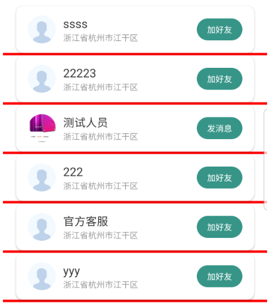
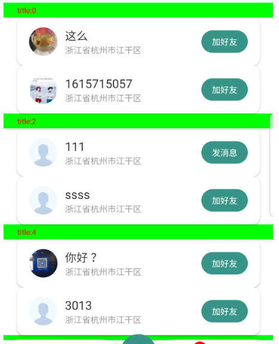
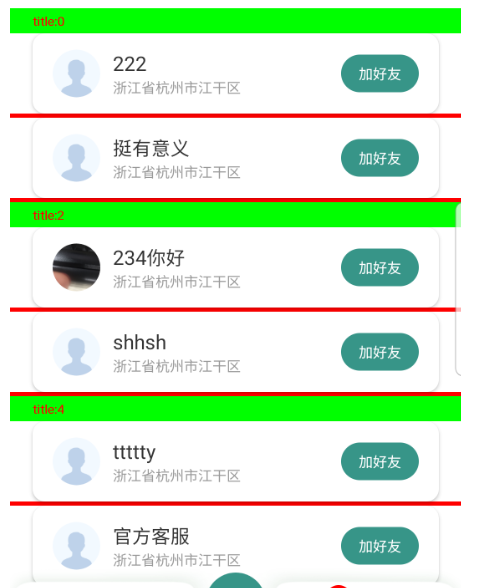

ItemDecoration详解
Decoration是装饰的意思，ItemDecoration用来为 RecyclerView 的 item 添加装饰。分割线就是最常见的装饰。 理解了ItemDecoration的用法，我们还可以实现其他效果（装饰）。
ItemDecoration 类除了构造方法，只包含3个方法（排除 @deprecated 注释的方法），按调用顺序排序如下：
- getItemOffsets:该方法内部负责 计算并预留出 绘制装饰需要的空间
- onDraw:在绘制RecyclerView item 前被调用。该方法内绘制的装饰将被 item 覆盖
- onDrawOver:在绘制RecyclerView item 后被调用。该方法内绘制的装饰将覆盖 item
ItemDecoration虽然是抽象类，但该类并不包含抽象方法。对于这个设计不是很理解。
添加分割线
我们来实现一个下图中的红色分割线：

//分割线高度，单位px
int deviceHeight = 10;
Paint paint = new Paint();
paint.setStyle(Paint.Style.FILL);
paint.setColor(Color.RED);
recyclerView.addItemDecoration(new RecyclerView.ItemDecoration() {
//最先调用，通过设置 outRect 的left、top、right、bottom属性。
//给即将绘制的装饰提供空间。
@Override
public void getItemOffsets(@NonNull Rect outRect, @NonNull View view,
@NonNull RecyclerView parent,
@NonNull RecyclerView.State state) {
super.getItemOffsets(outRect, view, parent, state);
outRect.set(0, 0, 0, deviceHeight);
}
//在绘制RecyclerView item 前被调用。该方法内绘制的内容将被 item 覆盖
@Override
public void onDraw(@NonNull Canvas c, @NonNull RecyclerView parent,
@NonNull RecyclerView.State state) {
super.onDraw(c, parent, state);
//返回需要绘制的item的总数、比可见item的数量多1、2个
int i = parent.getChildCount();
for (int j = 0; j < i; j++) {
//获取需要绘制装饰的view
View view = parent.getChildAt(j);
//绘制分割线
int top = view.getBottom();
int bottom = top + deviceHeight;
//1200是屏幕宽度，这里估算着指定了一个值
c.drawRect(0, top, 1200, bottom, paint);
}
}
//在绘制RecyclerView item 后被调用。该方法内绘制的内容将覆盖 item
@Override
public void onDrawOver(@NonNull Canvas c, @NonNull RecyclerView parent,
@NonNull RecyclerView.State state) {
super.onDrawOver(c, parent, state);
}
});
添加标题
接下来我们来实现一个更复杂的效果，给 index 为偶数的 item 添加一个标题。效果如下图：

//标题高度，单位px
int titleHeight = 60;
Paint paint = new Paint();
paint.setTextSize(30);
paint.setStyle(Paint.Style.FILL);
paint.setColor(Color.RED);
recyclerView.addItemDecoration(new RecyclerView.ItemDecoration() {
@Override
public void onDraw(@NonNull Canvas c, @NonNull RecyclerView parent,
@NonNull RecyclerView.State state) {
super.onDraw(c, parent, state);
// 需要绘制的Item的总数
int i = parent.getChildCount();
for (int j = 0; j < i; j++) {
//获取View的index
View view = parent.getChildAt(j);
int pos = parent.getChildAdapterPosition(view);
boolean b = pos % 2 == 0;
//true 表示需要绘制标题
if (b) {
// 先绘制绿色条作为背景
int bottom = view.getTop();
int top = bottom - titleHeight;
paint.setColor(Color.GREEN);
c.drawRect(0, top, 1200, bottom, paint);
paint.setColor(Color.RED);
//计算baseline的y坐标
Paint.FontMetrics fontMetrics = paint.getFontMetrics();
float distance = (fontMetrics.bottom - fontMetrics.top) / 2 - fontMetrics.bottom;
float baseline = bottom - (titleHeight / 2f) + distance;
//绘制文字
c.drawText("title:" + pos, view.getLeft(), baseline, paint);
}
}
}
@Override
public void getItemOffsets(@NonNull Rect outRect, @NonNull View view,
@NonNull RecyclerView parent,
@NonNull RecyclerView.State state) {
super.getItemOffsets(outRect, view, parent, state);
//获取view在adapter中的位置
int pos = parent.getChildAdapterPosition(view);
//index 为偶数的item 头部需要留出空间，绘制title
boolean b = pos % 2 == 0;
if (b) {
outRect.set(0, titleHeight, 0, 0);
} else {
outRect.set(0, 0, 0, 0);
}
}
});
ItemDecoration是可以叠加的使用的
recyclerView.addItemDecoration(new LeftAndRightTagDecoration(this));
recyclerView.addItemDecoration(new SimpleDividerDecoration(this));
我们把上面2个ItemDecoration同时添加到RecyclerView看下什么效果
到这里这篇博客就结束了。 很多同学可能对 第二个例子中 drawText() 方法baseline的计算逻辑不太理解。请参考这篇博客。